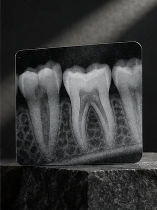
01Обследование и планирование
Диагностика
Методы, которые помогают врачу получить данные для обсуждения лечения.
- Первичный осмотр
- Рентген-диагностика и КТ
- Внутриротовое 3D-сканирование
- Фотопротокол и цифровой дизайн улыбки
Направления лечения
В К78 представлены основные направления стоматологии для взрослых и детей. Посмотрите, с чего можно начать знакомство с клиникой.
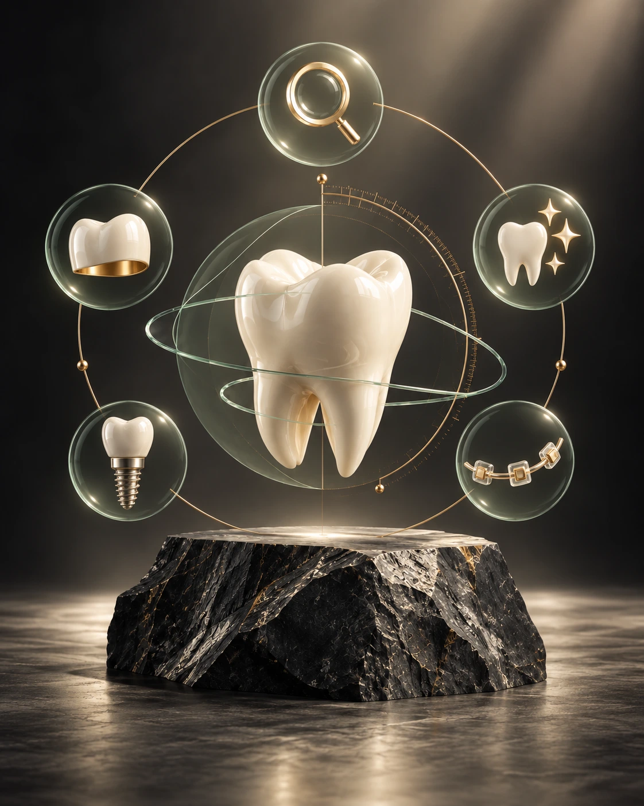
К78 · МоскваПо вашему запросу
Это навигация по сайту, а не способ поставить диагноз. На приёме врач обсудит вашу ситуацию и возможные варианты.
Каталог
Выберите направление, чтобы изучить услуги и цены, а затем перейти к описанию нужной процедуры.

01Обследование и планирование
Методы, которые помогают врачу получить данные для обсуждения лечения.
 02
02Зубы и корневые каналы
Направление включает лечение кариеса и заболевания тканей внутри зуба.
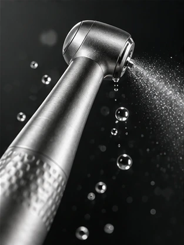
03Профилактика и уход
Профессиональная гигиена и процедуры для изменения оттенка зубов.
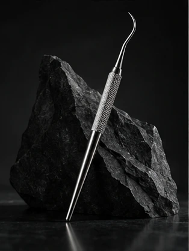
04Удаление и подготовка
Направление объединяет хирургические процедуры для удаления зубов и подготовки к дальнейшему лечению.
 05
05Восстановление отсутствующих зубов
Варианты имплантации и дальнейшего восстановления обсуждаются после обследования.
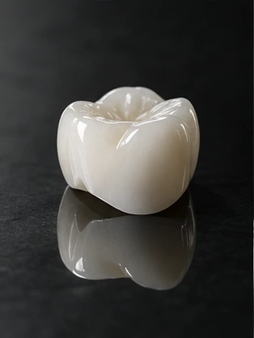
06Коронки и протезирование
Восстановление формы и функции зубов с помощью съёмных и несъёмных конструкций.
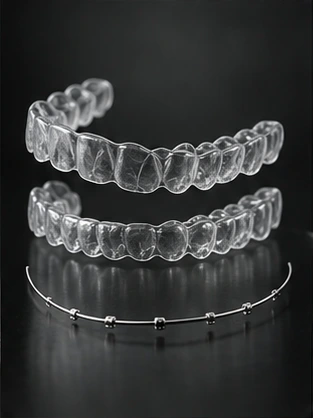
07Прикус и положение зубов
Варианты коррекции прикуса для взрослых и детей обсуждаются с врачом-ортодонтом.
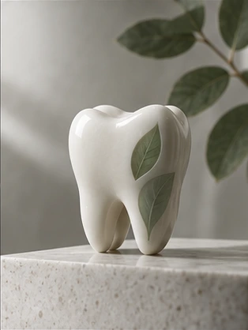
08Для детей и подростков
Консультация, профилактика и лечение зубов у детей с учётом возраста и индивидуальной ситуации.
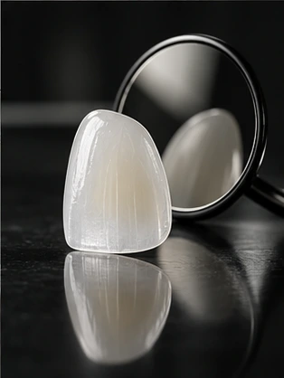
09Форма, цвет и эстетика улыбки
Собирает услуги из нескольких направлений; отдельные дублирующие страницы не создаём.
 10
10Корневые каналы
Лечение и перелечивание корневых каналов, в том числе под микроскопом.
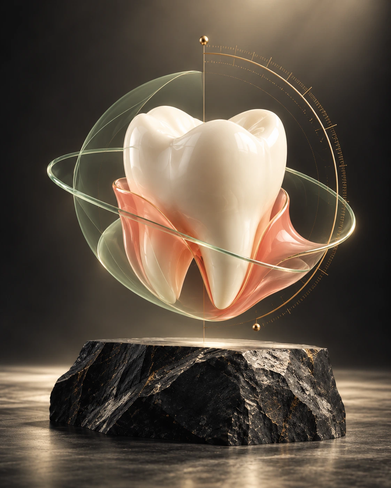
11Забота о здоровье дёсен
Диагностика, лечение заболеваний дёсен и поддерживающая пародонтологическая гигиена.
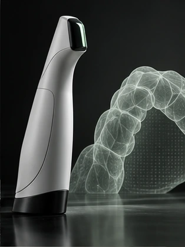
12Цифровая модель зубных рядов
3D-сканирование зубных рядов для цифрового планирования лечения и восстановления.
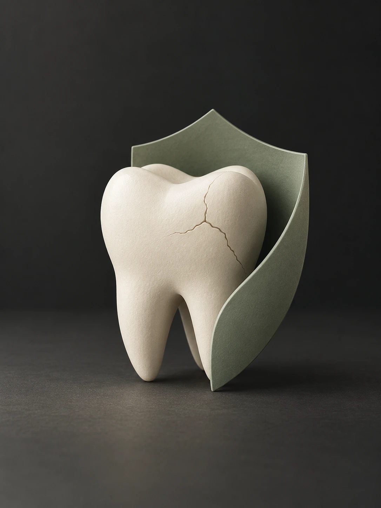
13Информация по теме
Консультация и лечение травм зубов, включая сколы, вывихи и повреждения коронковой части.
У каждой услуги есть отдельная страница с описанием, рекомендациями и связанной стоимостью.
Есть вопросы?
Свяжитесь с клиникой, чтобы уточнить информацию о направлениях и приёме.
Контакты К78